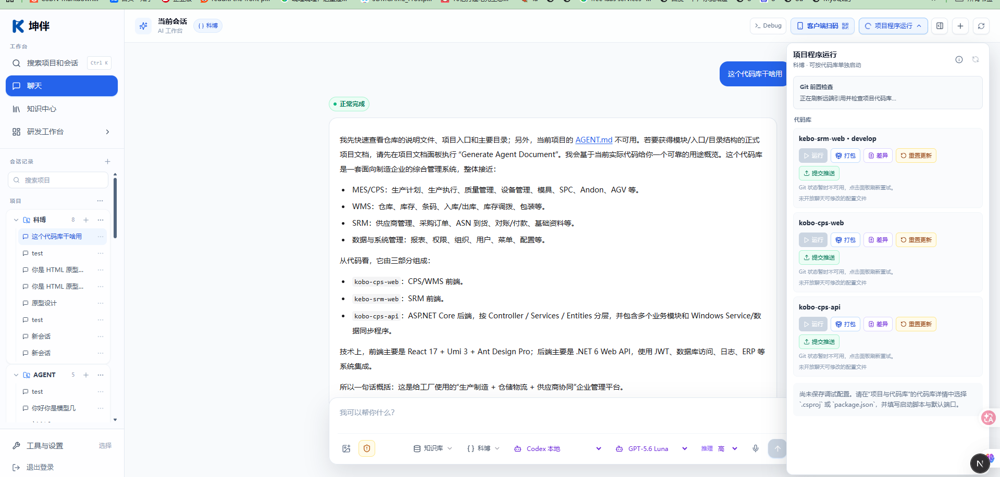

坤伴面向企业研发团队，将 AI 会话、项目代码、知识资料与研发工具汇聚到同一工作台，帮助团队从理解需求、形成方案，推进到开发验证与审批交付。

产品主界面实拍 · 项目会话、AI 对话与项目程序运行集中呈现
按项目组织会话与代码，延续任务上下文。
结合文字、资料与图片，开展分析和实施。
查看代码差异，使用运行、打包与交付入口。
围绕项目事实讨论，减少重复说明。
通过原型、预览和代码差异核对结果。
保留资料来源，让知识服务后续任务。
连接项目上下文与研发工具，让分析、实施和复核围绕同一项任务展开。
关联项目与代码上下文，辅助理解系统、分析问题和修改代码。
保留原文，按需提炼知识草稿，支持检索与来源核对。
编排多个 Agent 会话的职责和上下游关系，查看执行状态。
将需求转成可预览的页面，支持评审、修改与效果确认。
查看差异、运行与打包；通过变更集检查、人工审批后交付。
分析存量代码、形成改进建议，支持验证后生成待审批变更集。
目标 · 资料 · 验收条件
分析 · 原型 · 代码修改
检查 · 审批 · 版本记录
选择一个项目、一项明确任务和一组验收条件，用可预览的成果与可核对的交付记录，评估协作效果。
支持企业内网部署；模型与外部连接按项目配置。具体能力以部署版本、权限和验收范围为准。